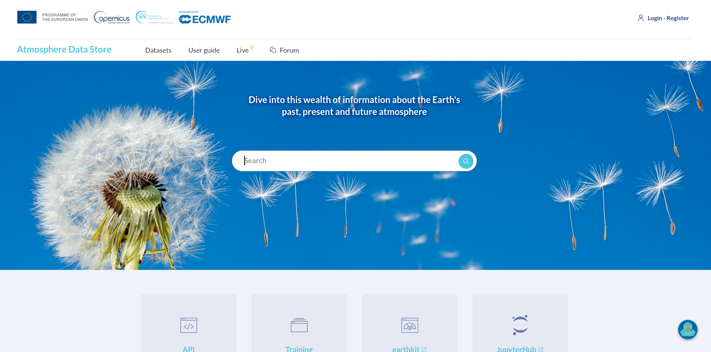
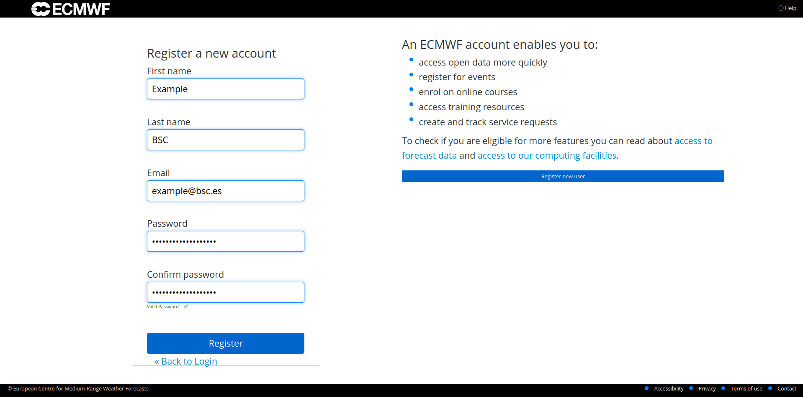
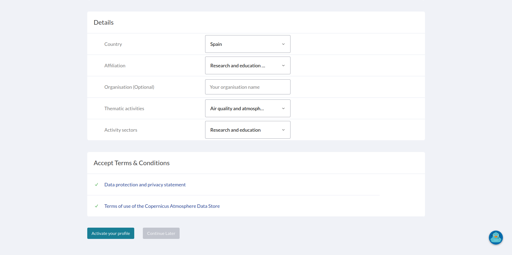
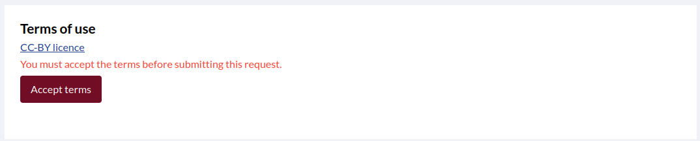
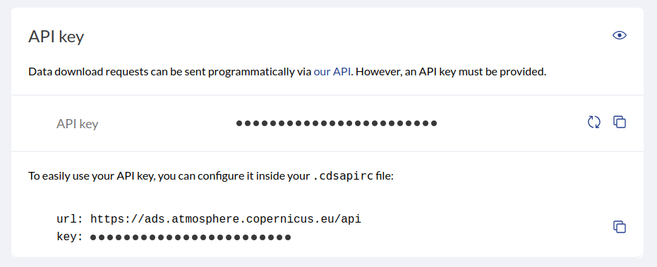

Account setup in Atmosphere Data Store
1. Create an ECMWF Account
If you already have an ECMWF account, you can skip this subsection and go to Prepare the Configuration File.
Go to the Atmosphere Data Store page and click Login / Register at the top right corner.

Then, click Register new user and create a new account.

Check your confirmation email, accept the Terms and Conditions, and fill in the required information to activate your account.

2. Accept Dataset Terms
Navigate to the download page of the dataset you want to download. For example this one.
You only need to do this once to any dataset, it will apply to all datasets.
Scroll down to Terms of Use and accept the CC-BY license.

3. Prepare the Configuration File
Before downloading, prepare your configuration file. It’s recommended to first read How to Enable Atmosphere Data Store Download.
or
You can use any of the preconfigured sections in configurations/cams_dl.conf. For example:
./bin/providentia --config=cams_dl.conf --section=cams_analysis_ensemble-regional --dl
4. API Configuration
If you had the
~/.cdsapircalready configured on your computer, you can skip this section.
Once you run the command, the following message will appear:
“’.cdsapirc’ file not found. Creating it at /home/example/.cdsapirc. Do you agree? ([y]/n)”
Answer y to the prompt.
Next, you will be asked for your personal access token:
“Enter your personal access token, which you can find at https://ads.atmosphere.copernicus.eu/profile after login:”
Go to the link specified in the prompt, scroll down to API Key, and copy it.

Paste your API key on the prompt. Providentia will automatically create the ~/.cdsapirc file.
If the API key is incorrect, Providentia will remove the file. You can then run Providentia again and enter the correct API key.
Congratulations! You are now ready to start downloading CAMS data from the Atmosphere Data Store using Providentia.